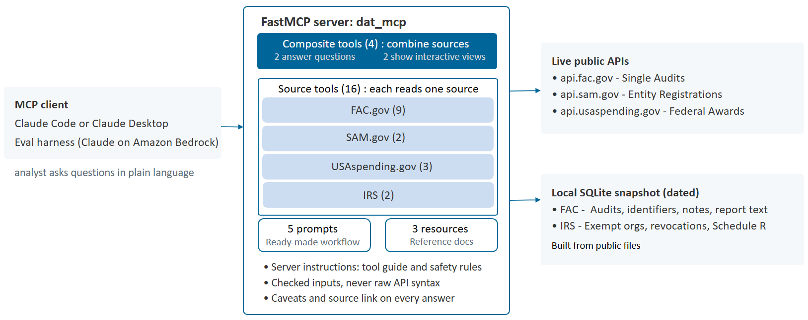

Grantee Audit Tracking MCP Server
HRSA OBF team entry in the GSA MCP Server & SI Agent Government Hackathon.
Demo video, 17 minutes: the problem, the server, and live investigations.
What it is
An MCP server that lets an SI agent investigate a federal grantee's Single Audit history across the Federal Audit Clearinghouse (FAC), SAM.gov, USAspending, and IRS exempt-organization records, all public data. It resolves every identifier a grantee has filed under, finds the audits that could cover a given year, and links each fact to its public source.
The agent gathers the evidence; the analyst makes the call. The tools return sourced findings with their caveats, never a compliance or risk determination.

See more
- Code and README on GitHub: tools, results, evaluation, and security
- Slide deck (PDF)
- Evaluation document (PDF): method, results, security, lessons learned